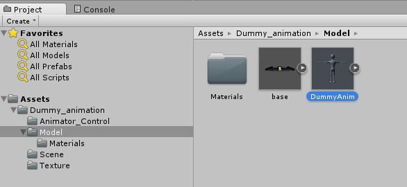
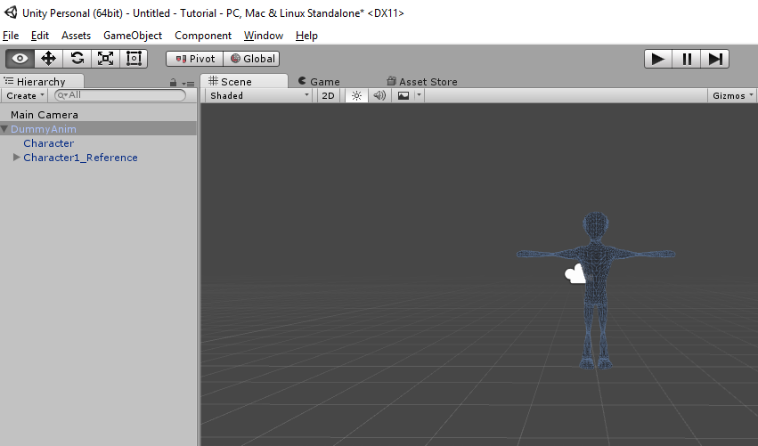
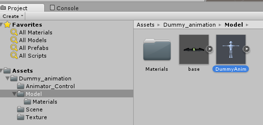
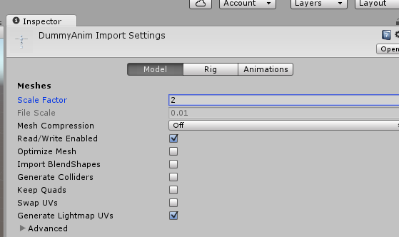

An avatar or creature that you want to add is similar to what you'd want to do for a block.
Under the Dummy_animation folder, in your Project window, look for the a model. In the Dummy Animation, it's found under the Model folder.

Click and drag the DummyAnim up into your Hierarchy window. Unlike blocks, the Transform Position doesn't matter. Even after you reset it to 0,0,0, your model may not be centered. Double click on the DummyAnim in the Hierarchy window to center your object to your view.

Since he's already fully animated, the Scale button in Unity may not be able to do it. If your character is scaled correctly in Unity, but shows up in the world super small, you can adjust the size of the model.
In the Project window, select the DummyAnim Model, found under Dummy_animation/Model folder.

In the Inspector window, select the Model button.

The Scale Factor for the DummyAmin is set to 2. Change to 20, and click on Apply. This should upscale (or downscale) all the meshes and animations. It may look a bit strange in Unity, but may look alright in the game.
Created with the Personal Edition of HelpNDoc: Free Kindle producer